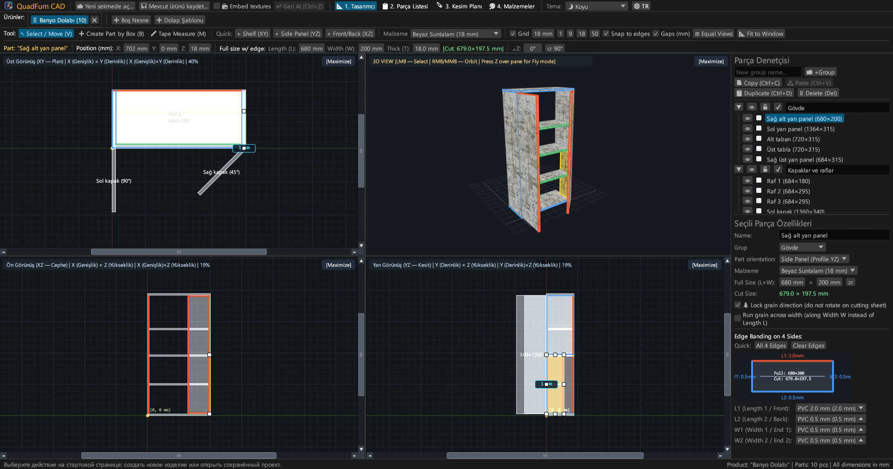
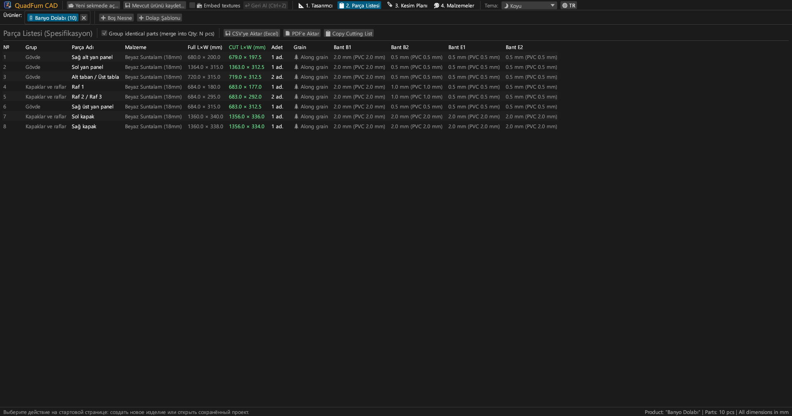
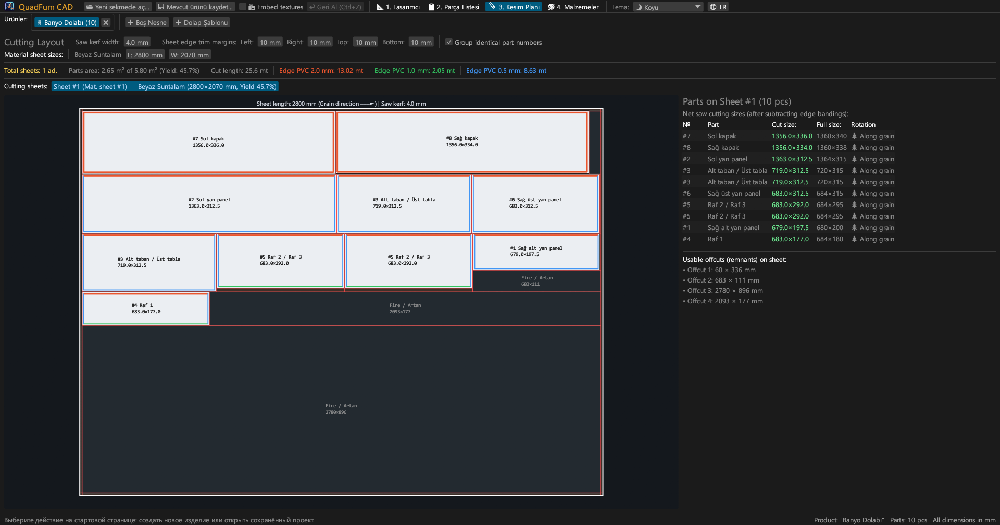
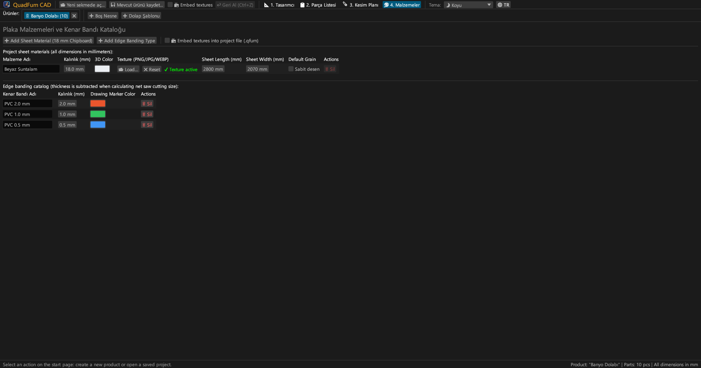
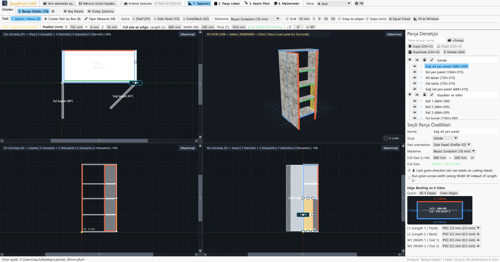
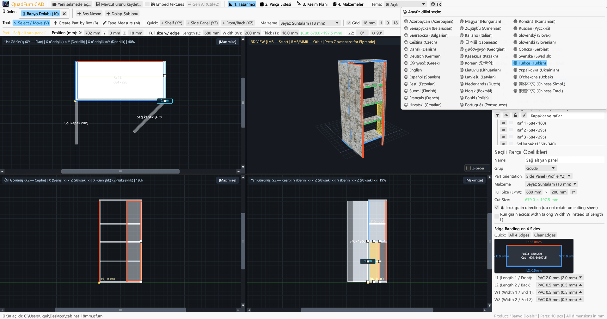

Mobilya üreticileri ve atölyeler için hızlı masaüstü CAD. 4 senkronize görünüm, formül destekli boyut girişi, kenar bandı düşümü ve kesim şeması.

4 görünümde çizim, hassas sayısal konumlandırma ve giyotin kesim şemasını tek bir uygulamada birleştirir.
Üst (XY), Ön (XZ), Yan (YZ) ve 3D görünümlerinde kaydırma çubukları, manyetik yakalama ve canlı ölçülendirmeyle eş zamanlı çalışma.
Koordinatlar (X, Y, Z), ebatlar (L × W × T) ve açının formül hesaplayıcısıyla doğrudan girilmesi (örn. 600-4 veya (800-36)/2).
Yatar daire testere için net ebatlama ölçülerini hesaplamak üzere 4 kenara PVC/ABS bant kalınlığı (0.4–2.0 mm) atama.
Ahşap desen yönü, testere bıçağı kalınlığı (4.0 mm), kenar tıraşlaması ve kullanılabilir parça takibini gözeten kesim motoru.
Sekmelerde birden fazla mobilyayla aynı anda çalışma. Malzeme ve kenar bantlarıyla birlikte parçaları kopyalayıp yapıştırma.
Yazdırmaya hazır A4 Yatay albüm: parça listesi, 4 görünüm çizimi, plaka kesim şemaları ve +%15 fire paylı malzeme dökümü.





Harici bağımlılık gerektirmeyen bağımsız taşınabilir ikili dosyalar.
Kurulum gerektirmeyen simgeli taşınabilir çalıştırılabilir dosya.
sudo apt install ./quadfurn_0.2.4_amd64.deb
Apple Silicon (M1–M4) ve Intel x86_64 için evrensel uygulama paketi.
| Tuş | Eylem | Kapsam |
|---|---|---|
| V | Seç / Taşı aracı (8 tutamaç, seçim çerçevesi) | 2D Görünümler |
| B | Çerçeveyle parça oluşturma (etkin düzlemde dikdörtgen çizme) | 2D Görünümler |
| M | Şerit metre (milimetre cinsinden hassas mesafe ölçümü) | 2D Görünümler |
| Z | Birinci şahıs serbest uçuş modu (WASD ile Noclip) | 3D Pencere |
| ← → ↑ ↓ | Parçaları ızgara adımı kadar kaydırma (Shift ile çift adım) | 2D Görünümler |
| Ctrl + C / V | Parçaları kopyala / yapıştır (sekmeler arası çalışır) | Tüm Sekmeler |
| Ctrl + D | Seçili parçaları öteleyerek çoğalt | Etkin Proje |
| Ctrl + S | Projeyi .qfurn / .json dosyasına kaydet | Etkin Proje |
| Ctrl + Z | Son işlemi geri al (40 adıma kadar geçmiş) | Etkin Proje |
| Delete / Backspace | Seçili parçaları sil | Etkin Proje |